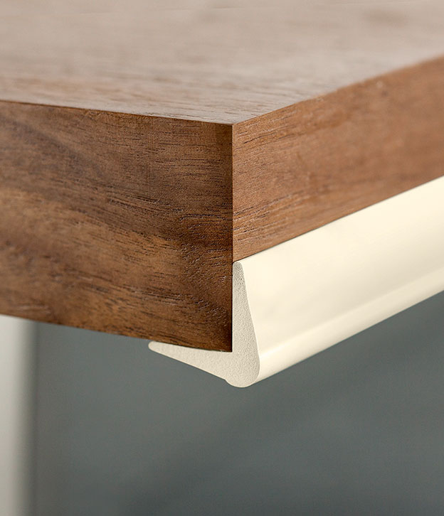

пересушивание слизистых оболочек
- соблюдайте нормы влажности воздуха 60-70%;
- используйте увлажнители воздуха в холодные периоды года;
- поддерживайте оптимальный температурный режим в комнате
- увлажните воздух в помещении;
- при появлении насморка: промойте нос физиологическим раствором натрия хлорида (0,09%);
- устраните слизь аспиратором
НЕЛЬЗЯ
- использовать сосудосуживающие средства чаще 1-2 раз в день;
- использовать спреи под давлением для детей до 6 месяцев
